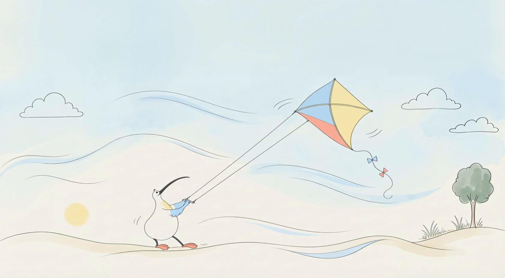

Understand the business.
Explore the rules and workflows in your software. Add the experience that explains the why.
Explore ↗AI with business context.
Accountable delivery.
Bring what your systems do and what your people know into one shared business context. Use it to change your software, backed by a team accountable for delivery.

A new business need. A shifting stack. An expert moving on. Change keeps coming. Business context gives you a basis for deciding where to go next.
Turn up the wind to lift the kite. Release its structure to scatter the pieces. Bring the wind to zero and watch them settle.
The wind can change. Shared structure helps you turn it into directed movement.
Part 1. Give AI the business context
The code can show you a rule. The person who runs the process can explain why it exists, when it matters, and which exception everyone remembers.
Bring that know-how together with system knowledge and what the business needs next. Give teams and agents the rules, reasons, and priorities to work from. Keep that context available as people and software change.
See context make a difference ↓Understanding a system means understanding the business it serves.
Illustrative change scenario
Payments received after 16:00 move to the next processing day. The rule connects to the payment run and the settlement report.
The code tells you what happens.
An explanatory example, not a live product screen or a complete impact assessment.
Part 2. Give action a reliable starting point
A task is only part of the picture. Useful agents also need the business context, connected knowledge, and tools to investigate and do the work.
Kite brings that understanding into development. Explore dependencies, work on proposed changes, and keep people involved in review and validation.
Part 3. Put understanding to work
Explore the rules and workflows in your software. Add the experience that explains the why.
Explore ↗Follow relationships between programs and data before deciding how to proceed.
Explore ↗Extend, refactor, or modernize with context from your systems and your people.
Explore ↗Try the starting point
Give this illustrative agent the context and tools it needs. See how its next step changes.
How people keep direction ↗Inside the product
Follow system relationships and the work of understanding them. Bring a real question to a demo.

AI with skin in the game
Our confidence starts with understanding your business context. We use Kite to connect the knowledge and help deliver the change.
We trust the technology enough to commit to a fixed price for agreed work. If that work takes more effort than we planned, we absorb the extra delivery cost.
Discuss your project ↗Connect what the systems do, what your people know, and the business outcome you need.
Define the scope and what done means together. Agree a fixed price before the work begins.
Our team delivers with Kite, with human review and validation. Extra effort for the agreed work is at our cost.
If the scope changes, we agree the change with you.
A few useful answers

It means our team takes commercial responsibility for the work we agree to deliver. We trust our technology enough to offer a fixed price for that scope. If it takes more effort than we planned, we carry the extra delivery cost.
We start with your business context, agree the scope and what done means, then commit to a price before work begins. Additional effort within that scope is our cost. If you need to change the scope, we agree the change with you.
Understand the business context, investigate what a change may affect, and use that knowledge to guide development. People still decide, review, and validate the resulting behavior.
People can contribute business explanations, exceptions, and experience alongside knowledge recovered from the software. That gives teams and agents a more useful starting point than code alone.
Yes. Kite supports development with context, including extending functionality, refactoring, and modernization. The work includes human review and validation.
A business process, a question about your systems, or a change you want to make. We can explore the context and shape a useful scope together.